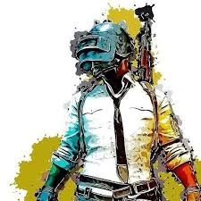
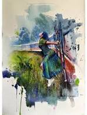
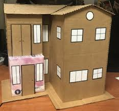

- Playing video games
- Playing sports (football, basketball, soccer, etc.)
- Drawing or painting
- Building model kits (cars, airplanes, ships, etc.)

Video games are typically categorized according to their hardware platform, which traditionally includes arcade video games, console games, and computer (PC)

Sports is the ultimate destination for Sports fans from around the World. Get latest sports news and updates from Cricket, Tennis, Football

The expression of ideas and emotions, with the creation of certain aesthetic qualities, in a two-dimensional visual language. The elements of this language—its shapes, lines, colours, tones, and textures—are used in various ways to produce sensations of volume, space, movement, and light on a flat surface.

Originally this was a form of modelling undertaken because of the low cost involved. Card, a means of cutting and glue are all that is needed. Some models are 100% card, while others use items of other materials to reinforce the model. After World War II cardboard models were promoted by a number of model companies.